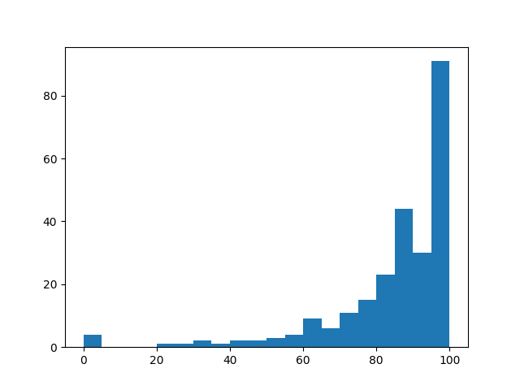

Individual Coursework Feedback
2024-01-03
Thanks all for your efforts in doing the individual coursework!
You can find the solution here.
The performance was really good, below are some summary statistics of your
marks:
- mean: 84.767068
- standard deviation: 18.338494
- min: 0.00
- 25th percentile: 80.00
- 50th percentile: 89.00
- 75th percentile: 98.00
- max: 100.00
Here is a plot of the distribution of the marks:

Here is a detailed summary of the various things I checked for for each question
as well as the percentage of students who were correct:
- 1a check answer is an equation: 96.80 %
- 1a check output uses dsolve as opposed to hard coding it: 98.40 %
- 1a check answer satisfies differential equation: 96.40 %
- 1b check answer is an equation: 96.80 %
- 1b check output uses dsolve as opposed to hard coding it: 98.40 %
- 1b check answer satisfies differential equation: 92.80 %
- 1c check answer is an equation: 87.20 %
- 1c check output uses dsolve as opposed to hard coding it: 98.00 %
- 1c check answer satisfies differential equation: 87.20 %
- 1d check answer is an equation: 98.00 %
- 1d check output uses dsolve as opposed to hard coding it: 98.00 %
- 1d check output satisfies differentia equation: 81.20 %
- 1d check answer satisfies differential equation: 94.40 %
- 2a check general solution is a set: 70.00 %
- 2a check solution excludes 0: 72.00 %
- 2a number of solutions for the cubic must be three: 69.20 %
- 2b expected answer for equation: 91.60 %
- 3a check function has a docstring: 52.00 %
- 3a check function is not defined for correct range of numbers: 90.00 %
- 3a check specific values of function: 67.60 %
- 3b check correct value for n equals 5: 84.00 %
- 3c exact value for p equals one half: 82.40 %
- 3c checkout output is approximately correct: 82.40 %
- 3d checkout output is correct set: 81.60 %
- 3d check answer is obtained using solveset as opposed to hard coding it: 89.60 %
- 4a correct value of determinants: 89.20 %
- 4a determinants is a list: 76.00 %
- 4a input calculated using for loop: 75.60 %
- 4b correct value of number_of_rows: 89.60 %
- 4b check correct type of output: 80.40 %
- 4c check output is calculated using a for loop: 79.60 %
- 4c makes use of correlation calculation as opposed to hard coding it: 94.00 %
- 4c value is correct to 6 decimal places: 87.60 %
- 4c check answer is consistent with values of determinants and number_of_rows: 85.20 %
- 4d make use of linear_regression as opposed to hard coding it: 85.20 %
- 4d check answer is consistent with values of determinants and number_of_rows: 50.00 %
Some common errors:
- In question 4d students didn't order the arguments correctly for the
calculation of the linear regression.
- Tuples where used when lists were requested.
- Students didn't include a docstring when defining a function.
On that note I appreciated two docstrings for their humour:
docstring- This is my favourite:
```
this is a docstring dont mark me down :D
Personally I don't understand how a man whos forte is game theory - whatever that is
could possiby think a movie about saving a private named Ryan is an optimal strategy
given that so many men died to send him home...
I would have unsaved private Ryan - personally.
if there is any doubt though this function generates the sequence stated in the question.
.................. but it does not bring back Captain John Miller.
```